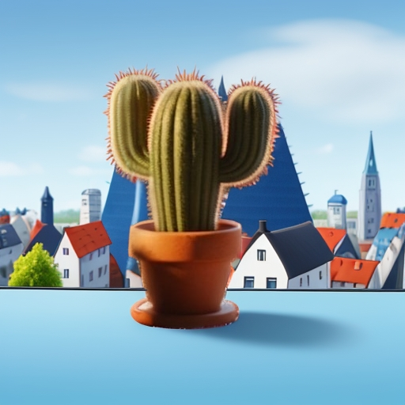
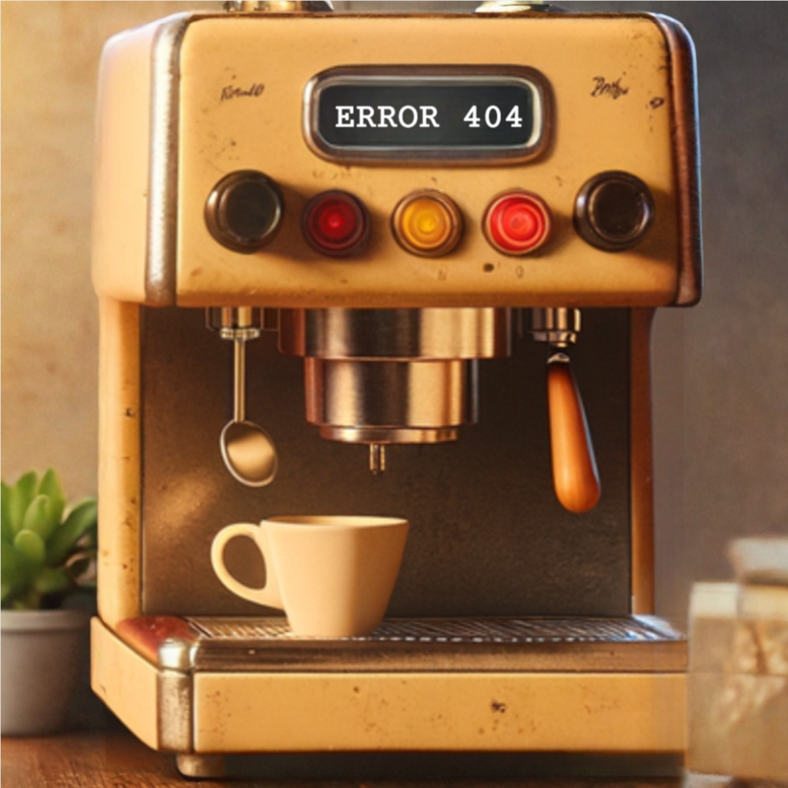
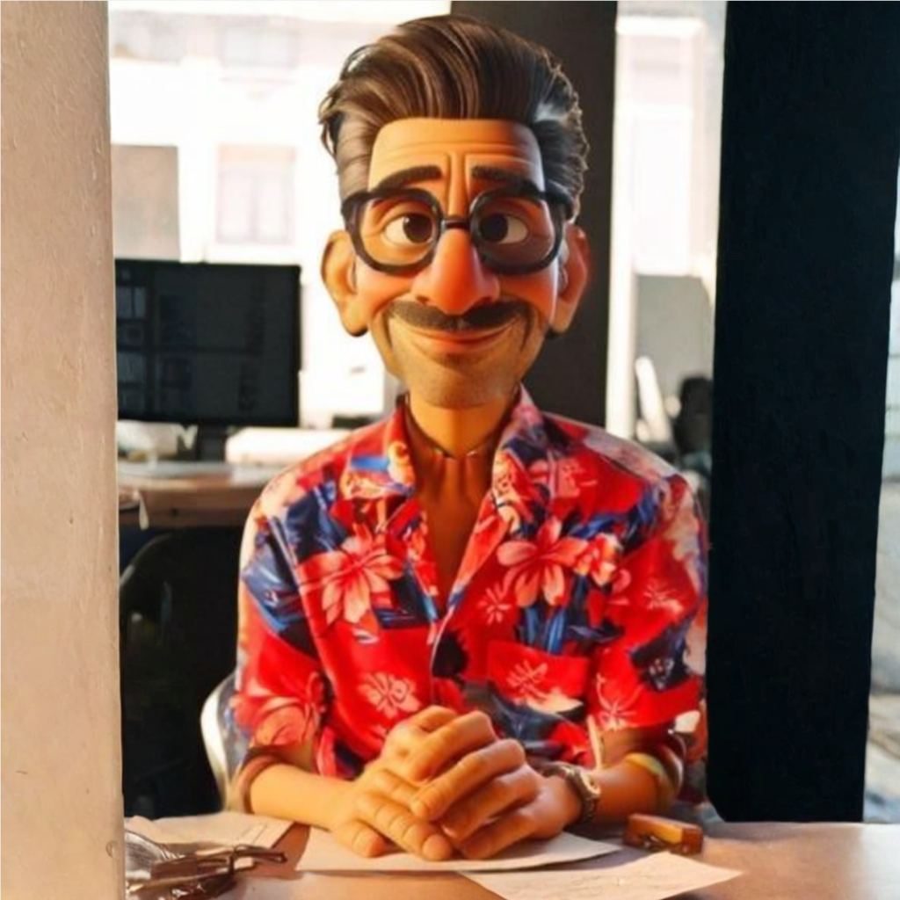

Noch 26 Tage bis zur Veröffentlichung von "Alles ausser Kontrolle"
Wie unser Büro zum Ashram wurde
Eine spirituelle Transformation, dokumentiert von Sandra

Herbert meditiert auf der Fensterbank

Bettys Erleuchtungsdisplay

Auch Thomas für einmal entspannt